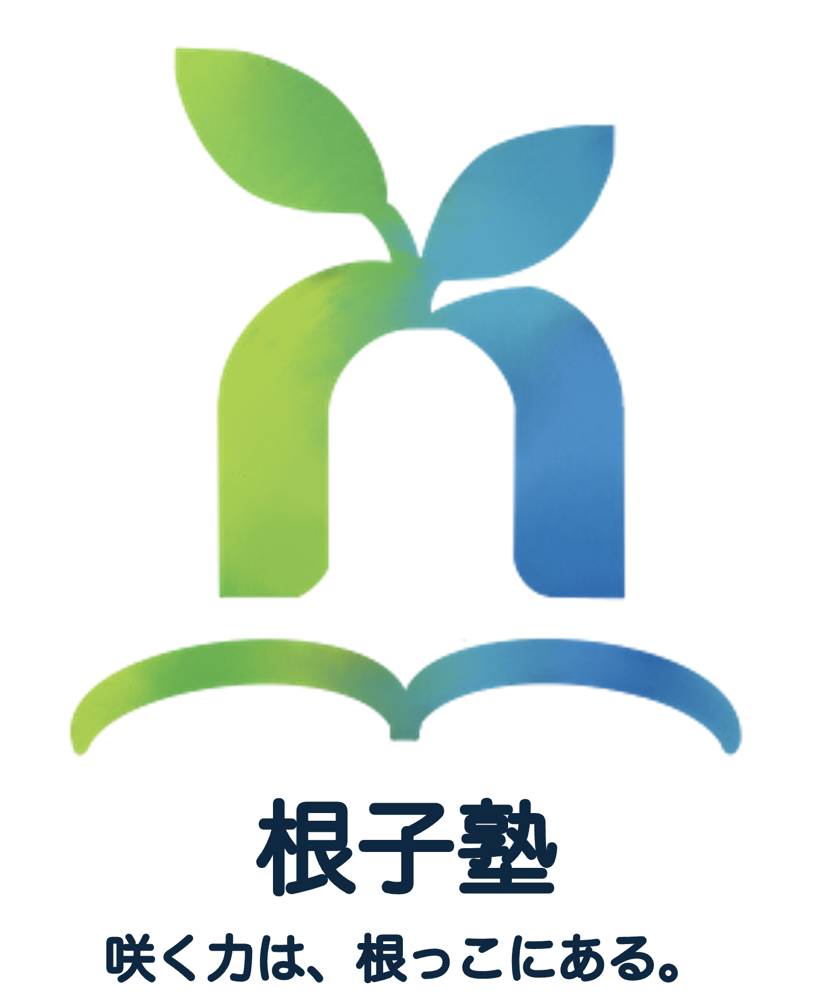

scroll根子塾
咲く力は、根っこにある。
総合型選抜は、特別な誰かのための入試ではありません。 自分の興味を、時間をかけて突き詰めてきた人が評価される入試です。 高校1・2年生のうちから、その興味の「根っこ」を一緒に探し、育てていきます。
初回8週間無料のモニターを募集しています。
想い
何をすればいいのか、分からなかった
私が受験生だった頃、総合型選抜を最初に知ったのは高校の先生からの話でした。 どうすれば総合型で戦えるのか全くわからない私を指導してくださり、様々な経験を重ねました。 あの時、先生が道を示してくれたから、私は合格にたどり着けました。
でもそれは、環境に恵まれていたから
振り返ると、私の合格は環境に恵まれた面が大きかったと感じています。 先生の支えがあったこと。 研究に協力してくださる機関とのつながりが、たまたま高校にあったこと。
一方で、私の身近には、自分でIoT機器を作ってしまうほどの力がありながら、コンテストなどに出る機会がなく、 総合型選抜では実績として示しにくかった友人もいました。 力の差ではなく、環境の差で、機会が分かれてしまうこともあります。 その気づきが、この塾を始める原点です。
周囲を味方にする力
総合型選抜で本当に問われるのは、周囲にどれだけ興味を持ち、周囲の持つ力を自分の力に変えていけるか。 私はそう考えています。
たとえば、視覚障害のある方の生活を支援する機器を開発したとき、私は県内の盲学校に、自分で連絡をとりました。 研究活動への協力をお願いするためです。 先生の了承は事前にいただいていましたが、発案も、アポイントも、日程調整も自分から周りを巻き込んで行いました。 当日は、生徒の皆さんと打ち解けるために点字を添えた名刺を用いて挨拶し、研究内容とは全く関係のない、同じ高校生として雑談したり遊んだりもしました。
誰かに頼ることは、弱さではありません。 自分ひとりでは届かない場所へ進むための、実績をつくる力そのものです。
花を咲かせるための根っこを、一緒に
総合型選抜は、自分の興味をどれだけ突き詰められるかが問われる入試だと感じています。
だからこそ、実績を探しに行く前に、まず自分の興味に気づくところから始めたいと考えています。
高校1・2年生のうちから、じっくり時間をかけて向き合っても、遅すぎることはありません。
花を咲かせるのは、あなた自身です。
私は、その根っこが深く広がっていくように、一番近くで伴走します。
指導の特徴
- 面接や書類を「日常の習慣」にする
- 面接や書類は、直前の詰め込みでは対応できません。 普段から人に伝え、文字に起こすことでその力が身についていきます。 根子塾では4週間に一度、日常の出来事を人に伝え、その題材を選んだ理由を文字にします。 この繰り返しが、そのまま面接で話す力と、想いを伝える文章を書く力になります。
- 指導者が当事者に近い
- 担当するのは、理系で総合型選抜を突破した現役の大学生です。 受験までの間、何が分からず、どこで悩んだのかを経験した立場から、受験生に近い目線で指導します。 様々な大学の総合型入試に関することや、技術系コンテストなど、本人の興味にあった情報を提供します。
- 実績をつくるのは、本人
- 研究やコンテストを、塾が用意して参加させることはありません。 もちろん、様々な情報はお伝えしますが、参加などの強制は本人の実績とは言えません。 普段の指導や雑談の中から本人の興味の芽を見つけ、情報提供と相談を行います。 参加するかどうかは本人が決めます。
- 高1・2から、月1回、長く続ける
- 1回の面談は1〜2時間ほどが想定されています。 高校1・2年生から月1回のペースで続ける伴走型です。 部活や学校生活と両立しながら、無理なく確実に力をつけていきます。
指導の流れ
4週間を1サイクルとして、次のように進めます。 なお、あくまで参考であり、確実に以下の通りとは限りません。
-
第1週 ミーティング
1〜2時間ほどのオンライン面談。 1か月の出来事を口頭で発表し、全体へのフィードバックを受けます。 次回の発表の構成と時間もここで伝えます。 様々な情報提供や相談についてもこの時間に行います。
-
第2週 振り返り
発表を録画した動画を見て、自分で改善点を書き出し振り返ります。 第1週で受けたフィードバック以外にも、自分で考えたことなどを書き出します。 それに対して、フィードバックを受けます。
-
第3週 題材を選ぶ
次回の発表の題材と、その題材を選んだ理由を書きます。 より志願理由書の形式に近い形での記述で、想いを文字で伝える力をつけていきます。 これに対して、フィードバックを受けます。
-
第4週 スライド提出
次回の発表に向けて、使用するスライドを作成、提出します。 自分の考えや想いを伝えるための道具として、スライドが使えるように力をつけていきます。 それに対して、フィードバックを受けます。
発表するのは、研究などの特別な内容である必要はありません。 発表の5週前から2週前までに起きた出来事から、題材を選びます。 日常の1コマを、その場にいなかった人へ、正確に、印象的に伝える練習です。
発表の時間は、毎回変わります。 「3分で伝える」「5分で伝える」と条件が変わるなかで、伝えたいことを選び、組み立てる力を鍛えます。
書いたものや作成したスライドなどのフィードバックに対して、修正して再提出する必要はありません。 それは指摘された内容が全て正しく、万人がそのように考えるわけではありません。 自分の考えや想いもあわせて、指摘されたことを受け、次回の課題で活かせれば問題ありません。 その繰り返しで力をつけていきます。
1年後に目指す姿
目指すのは、「視野が広がった」「知らなかった世界に触れた」と、本人が感じられるようになることです。 成果を点数で測りにくい取り組みだからこそ、変化のサインを次のように見ています。
- 題材を選んだ理由が、深まっていく 第3週に書く「なぜこの題材か」の文章が、回を重ねるごとに具体的で、自分の言葉になっていきます。
- 体験のあとに、新しい「気になる」が生まれる コンテストなどへ参加したあとや新たな知識を得た際に、「これが気になる」「あれも知りたい」という反応が増えていきます。
体験の場はコンテスト等に限りません。 外部で人と関わる経験も大切ですが、必須ではありません。 まずは自分の興味関心に気づくところから、伴走します。
対象
理工系・情報系の大学への進学を考えている、高校1・2年生が対象です。
指導者が理系で総合型選抜を突破した当事者であるため、現在は理工系・情報系に絞っています。 将来は指導者を増やし、より幅広い進路の方をお迎えしたいと考えています。
月1回の面談を長く続ける伴走型のため、それに無理なく取り組める方に向いています。 少人数でお受けするため、ひとりひとりに寄り添った指導を行います。
高校3年生向けのプランは現在準備中です。
料金・契約
20,000円／8週間
初回の8週間無料のモニターを募集しています。
- 契約
- 8週間単位で更新します（月単位ではありません）
- 手続き
- Googleフォームでの申込みと、電子媒体での同意書で行います
- お支払い
- 銀行振込
- 面談の方法
- オンライン（Google Meet）
ご希望があれば対面も可能です（レンタルルームなどの施設を借りて行います） - 連絡
- 日々の連絡は、生徒・保護者の方・指導者の3名のGoogle Chatで行います
運営者
代表：根子優太
所属：電気通信大学Ⅱ類
趣味：ダイビング、スノーボード
経歴
-
群馬県立桐生高等学校 普通科 入学
-
スーパーサイエンスハイスクール（SSH）全国発表会 出場
-
ぐんまプログラミングアワード 高崎商科大学賞 受賞
-
電気通信大学 総合型選抜 合格
-
群馬イノベーションアワード ファイナリスト
-
群馬県立桐生高等学校 普通科 卒業
ai/teens 世界の10代によるAIカンファレンス 参加 -
電気通信大学 入学
-
根子塾 設立
よくある質問
研究やコンテストの実績がなくても、参加できますか？
もちろんです。発表する内容は、特別なものである必要はありません。日常の1コマから始めて、自分の興味に気づくところから伴走します。
研究やコンテストを、紹介してもらえますか？
情報提供はします。普段の雑談から生徒が何に興味を持つかを探り、コンテストなどへの参加を提案することもあります。ただし、参加の強制はしません。実績をつくる主体は本人です。
文系志望でも受けられますか？
現在は、理工系・情報系を志望する方に絞っています。どうしても指導をご希望の際には、一度ご連絡ください。
高校3年生は対象ですか？
現在は、高校1・2年生向けの伴走型の指導を確立することを優先しております。高校3年生向けのプランは現在準備中です。
モニターとは何ですか？
最初の契約（8週間）を無料でお試しいただく制度です。2回目以降は、8週間ごとの契約となります。ただし、この制度は予告なく終了する場合があります。
オンライン面談に必要なものは？
Google Meetを利用できるパソコンやタブレットと、インターネット環境があれば参加できます。
合格は保証されますか？
合格をお約束することはできません。入試の結果は、本人の取り組みと、志望先との相性など多くの要素で決まるためです。私たちが約束するのは、自分の興味を深める時間と、そのための伴走です。